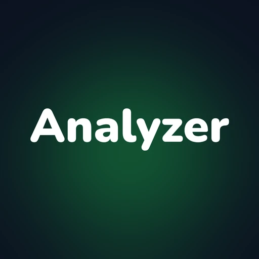
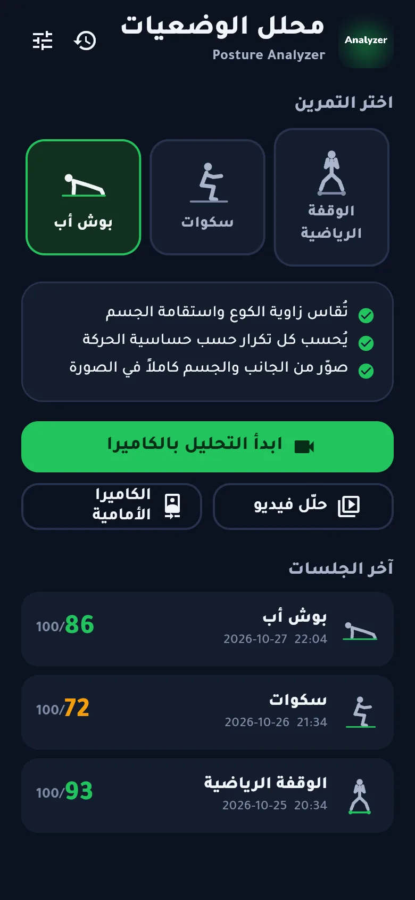
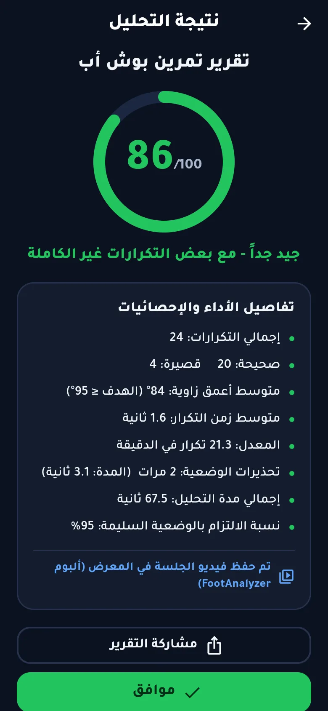
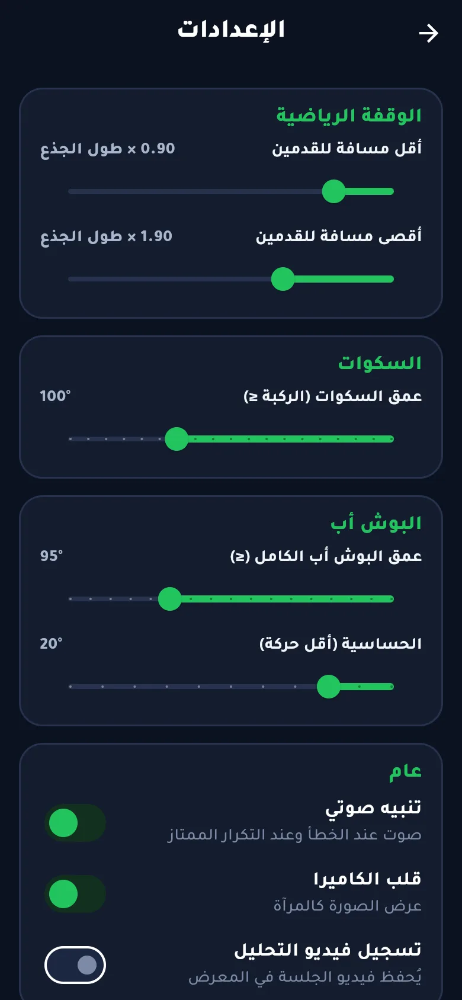
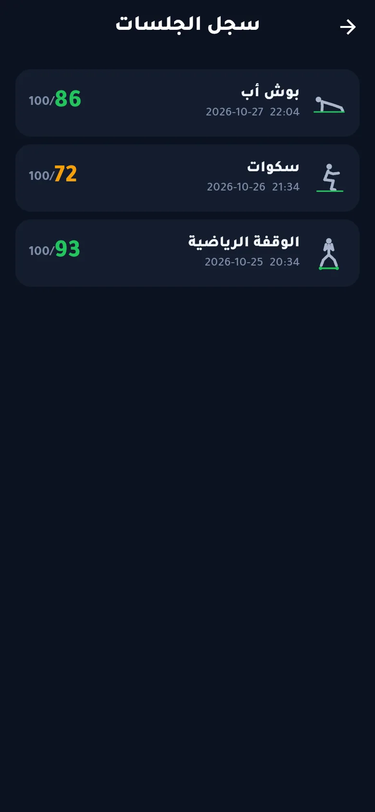

مدرّبك الشخصي في كاميرا هاتفك
«محلل الوضعيات» يحلّل وقفتك الرياضية وتمارين السكوات والبوش أب بالكاميرا لحظة بلحظة: يعدّ التكرارات الصحيحة، وينبّهك فوراً عند الخطأ، ويعطيك في النهاية تقريراً بدرجة من 100.
حمّل مجاناًلأجهزة أندرويد
ثلاثة تحليلات في تطبيق واحد
اختر التمرين، ضع الهاتف أمامك، وابدأ.
الوقفة الرياضية
يقيس المسافة بين قدميك نسبةً إلى طول جذعك، مثالي للملاكمة والفنون القتالية.
طبيعيضيقواسع
- يعدّ مرات التضييق والاتساع ومدتها
- معايرة على وقفتك أنت بضغطة
السكوات
يقيس زاوية الركبة في كل تكرار ويعرف إن نزلت إلى العمق المطلوب.
- تكرارات كاملة وغير كاملة
- تنبيه عند ميلان الظهر للأمام
- عمق تختاره أنت من الإعدادات
البوش أب
يقيس زاوية الكوع واستقامة الجسم من الجانب.
- تكرارات صحيحة وقصيرة
- تنبيه إن انخفض الورك أو ارتفع
- حساسية حركة قابلة للضبط
كل ما تحتاجه لتتمرن بشكل صحيح
مبني لتستخدمه وحدك، أو مع مدربك.
📷كاميرا أمامية أو خلفيةصوّر نفسك، أو دع مدربك يصوّرك بالكاميرا الخلفية.
🎞️تحليل فيديو من المعرضحلّل تمريناً صوّرته سابقاً.
⏺️تسجيل الجلسةيُحفظ فيديو التمرين في معرض هاتفك.
🔔تنبيهات صوتيةصوت عند الخطأ، ونغمة عند التكرار الممتاز.
⏸️إيقاف مؤقت وتصفيروعدّ تنازلي قبل البدء لتأخذ مكانك.
📊تقرير بدرجة من 100مع التفاصيل والتقييم ومشاركته بضغطة.
🗂️سجل الجلساتكل نتائجك محفوظة لتتابع تقدمك.
🔒خصوصية كاملةالصور تُحلَّل داخل هاتفك ولا تُرسل لأي مكان.
تقرير واضح بعد كل تمرين
درجة من 100 تجمع جودة التكرارات والالتزام بالوضعية السليمة.
86
90 فأكثر: ممتاز
75 – 89: جيد جداً
60 – 74: مقبول
أقل من 60: يحتاج إلى تحسين
لقطات من التطبيق
واجهة عربية بالكامل وتصميم داكن مريح.



طريقة التثبيت
التطبيق ليس على Google Play بعد، فيُثبَّت من الملف مباشرة.
- حمّل الملفاضغط زر التحميل من هاتف أندرويد.
- افتحهمن الإشعارات أو من مجلد التنزيلات.
- اسمح بالتثبيتإن طلب الهاتف، فعّل «السماح من هذا المصدر».
- ابدأ التمريناسمح باستخدام الكاميرا عند أول تحليل.
قد يظهر تنبيه من Google Play Protect لأن التطبيق جديد؛ اختر «التثبيت على أي حال».